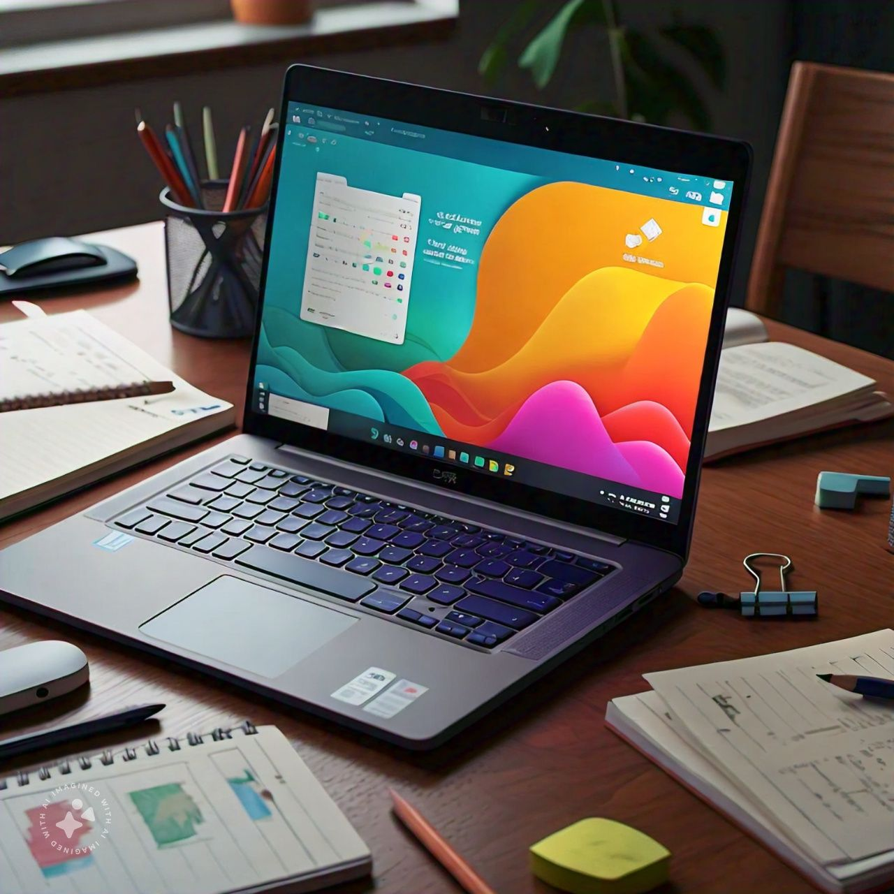

Learn about Laptops
2.1 How to Use a Laptop for Learning
Laptops offer the best balance between portability and performance, making them ideal for both on-the-go and intensive learning. Here's how to maximize the potential of your laptop:

Step 1: Set Up Your Laptop
- Install Essential Software: Download necessary learning tools, such as Microsoft Office, web browsers, and programming environments like PyCharm or Eclipse.
- Organize Files and Folders: Create folders for each subject or project to keep your materials organized and easy to access.
- Sync Data Across Devices: Use services like Google Drive or Dropbox to sync your files across your laptop, phone, and tablet, ensuring access to your study materials wherever you are.
Step 2: Customize Your Learning Environment
- Adjust Display Settings: Configure the brightness and resolution for extended use, and enable night mode to reduce eye strain during late-night study sessions.
- Set Up Shortcuts and Notifications: Customize your system with keyboard shortcuts for fast navigation, and manage your notifications to prioritize educational alerts.
Step 3: Boost Productivity with Multitasking
- Use Virtual Desktops: Create multiple desktops for different tasks, such as one for school work and another for personal use.
- Split-Screen Mode: Open your notes or research documents on one side while watching video lectures or working on assignments on the other side of the screen.
Step 4: Access Learning Resources
- E-Learning Platforms: Access Coursera, edX, and other platforms that offer rich learning experiences on larger laptop screens.
- Collaborate Online: Use tools like Zoom, Microsoft Teams, and Google Meet for group study sessions, virtual classes, or to attend webinars.
2.2 Key Features
- Portability and Performance: Laptops are highly portable, making them perfect for studying in different environments while offering more power than tablets for complex tasks.
- Extended Battery Life: Most modern laptops can last for several hours on a single charge, allowing for uninterrupted learning sessions.
- Customizability: Laptops allow for some level of hardware upgrades, such as increasing RAM or replacing the hard drive for better performance.
- Multitasking Capabilities: Laptops handle running multiple applications, allowing you to research, write papers, and manage study tasks simultaneously.
2.3 Educational Uses
- Programming and Development: Laptops are great for programming in languages like Python, Java, and C++ and are compatible with popular IDEs.
- Writing and Research: Ideal for long-form writing, essay drafting, and conducting research. Use apps like Microsoft Word, Google Docs, or Scrivener for academic writing.
- Content Creation: Laptops can handle basic to advanced content creation tasks, such as video editing, graphic design, or even 3D modeling.
- Online Learning: With a laptop, you can attend online classes, webinars, and even virtual labs, making it a versatile tool for e-learning.
2.4 Tips for Effective Use
- Use Keyboard Shortcuts: Learning shortcuts like "Ctrl + C" for copy and "Alt + Tab" to switch between applications can save a lot of time.
- Keep Your Laptop Cool: Make sure to use a laptop stand or cooling pad during intensive tasks like video editing or coding to avoid overheating.
- Back Up Your Work: Regularly back up your files to the cloud or an external drive to prevent losing important study materials.
2.5 Advanced Tips
- External Monitors: Add a second monitor to your setup to increase productivity by displaying reference materials on one screen while working on the other.
- Optimize Software: Remove bloatware and unused applications to speed up your system and free up resources for educational tasks.
- Upgrading Hardware: If your laptop supports it, consider upgrading the RAM or switching to a solid-state drive (SSD) to enhance overall performance.
Explore Courses for Laptop